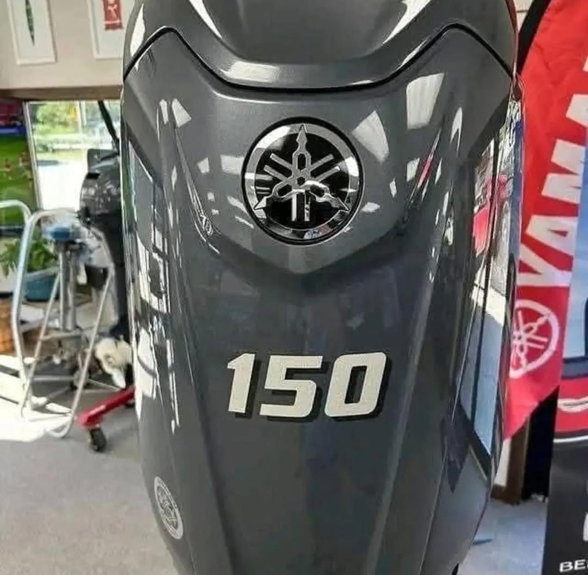
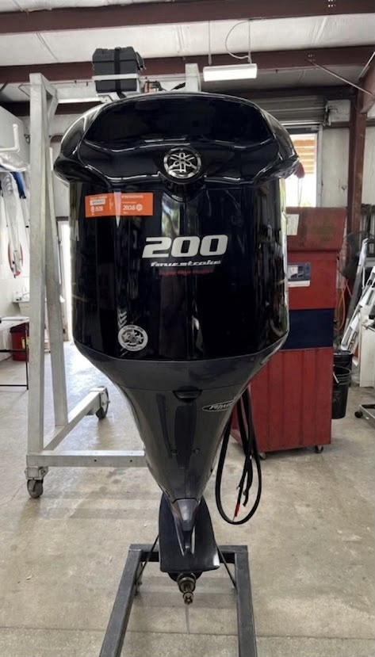
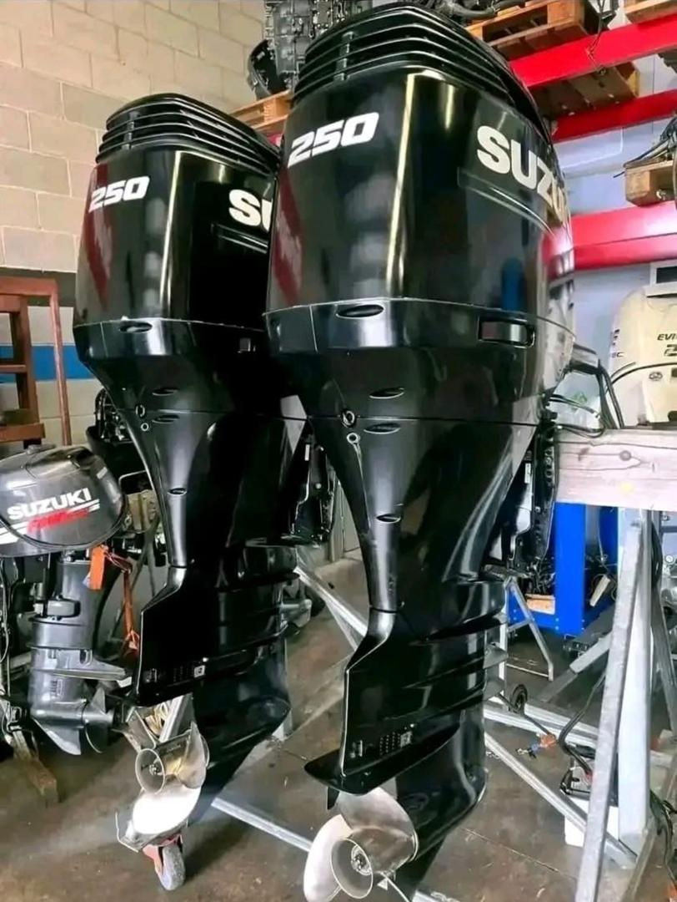

01 / PARTS
Outboard engines
Explore outboard engine options for your boat and the way you use it. Get in touch for help finding a suitable match.
Ask about engines →YOUR TIME ON THE WATER MATTERS
The right parts make all the difference. Find dependable marine components and thoughtful outboard care with Skegsmith Marine.
WHAT WE DO
From choosing the right component to keeping your outboard in working order, we’re here to make marine ownership feel simpler.
Explore outboard engine options for your boat and the way you use it. Get in touch for help finding a suitable match.
Ask about engines →The right propeller can make a difference to how your boat performs. We’ll help you explore the options.
Ask about propellers →Find marine steering components designed to help you stay in control and enjoy a confident ride.
Ask about steering →Keep your outboard looked after with repair, routine maintenance and servicing support.
Discuss a service →SALES INVENTORY
Explore featured outboard engines and matched packages. Each listing has its own page here on Skegsmith Marine, with key specifications and a direct way to ask about current availability.

20-inch shaft • 142 hours
Freshwater-use engine with 185 PSI compression across all four cylinders. Includes a mechanical binnacle and Yamaha Reliance stainless propeller.
View full listing
30-inch shaft • 310 hours
V6 outboard with Suzuki Precision Control drive-by-wire. ECU scan reported zero fault codes; fly-by-wire harness included.
View full listing
25-inch shaft • 215 hours
Inline four-cylinder outboard with a complete 100-hour service performed, including a new impeller, spark plugs, filters and gear oil.
View full listing
25-inch shafts • 482 / 479 hours
Matched counter-rotating pair with dual binnacle controls, twin digital gauges, main harnesses and a stainless tie-bar.
View full listingListing information is summarized from seller-provided details and may change. Photographs shown were supplied for these inventory listings. Contact Skegsmith Marine to confirm current price, condition and availability before purchase.
THE SKEGSMITH DIFFERENCE
Every boat and every boater has different needs. We take the time to understand what you’re looking for, help you identify the right parts and work toward a result you can feel good about.
Our commitment is straightforward: useful guidance, quality-focused products and customer service that puts your satisfaction first.
More about SkegsmithLET’S GET YOU WATER-READY
Tell us what you need. We’ll help you take the next step.
Contact Skegsmith Marine